Trace a request from arrival to final byte and name every waiting boundary.
02
Compute TTFT, decode time, goodput, concurrency, and retry amplification from raw events.
03
Separate demand, capacity, useful completions, attempts, and failures.
04
Write a reproducible workload/SLO/measurement contract before tuning an engine.
The 64-client outcome
Measured T4 experiment
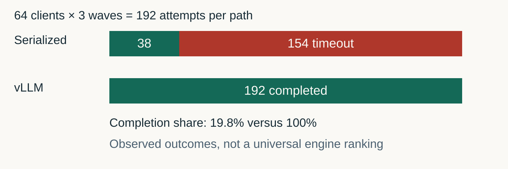
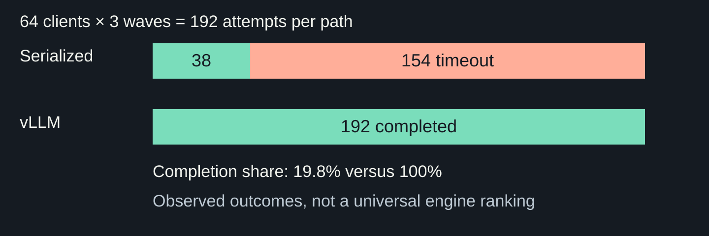
Measured T4 experiment. Count every attempt before explaining latency. These are three burst waves, not a sustained-capacity measurement. Source / method.
Serving is a promise with a workload attached
Working definition
SYSTEM CONTRACT
A serving system accepts demand, schedules stateful generation, streams results, and sheds work so that declared quality, latency, throughput, cost, and availability objectives hold for a declared workload.
Remove the workload and the promise is unfalsifiable. Remove failure policy and the promise fails exactly when it matters.
Four questions before any optimization
The diagnostic frame
Question
Evidence
Typical mistake
Where?
trace and component boundary
blame “the model”
When?
queue/prefill/decode timestamps
report one latency
Under what load?
arrival process + token distributions
say “concurrency 32”
What happens on failure?
deadline, cancel, retry, admission policy
let queues grow
“
The model call is a stage. The product is the controlled flow around it.
Lecture thesis
01
Draw the system boundary
If you cannot point to the queue, you cannot explain the latency.
Inference is computation; serving is coordination
Do not collapse the layers
Inference
tokenize inputs
run model forward passes
sample next tokens
stop on a termination rule
Serving
authenticate, admit, queue, schedule
stream, cancel, retry, rate-limit
load, warm, drain, roll back
measure promises by tenant/workload
Where did 154 requests time out?
T4 case study · step with →
Client
Edge / gateway
Admission
Scheduler
Model worker
Telemetry
Demand
A measured T4 wave sent 64 simultaneous requests, repeated three times: 192 attempts per server. Follow one wave across the boundaries.
Edge
Both endpoints streamed chat completions. The client waited at most 60 seconds; a working HTTP route did not prove the service could absorb the wave.
Admission
The serialized baseline offered no effective overload gate: 154 of 192 requests timed out at 64 clients. An early, explicit rejection would be more honest than a silent wait.
Scheduler
The baseline serialized generation behind one lock. vLLM completed all 192 requests in the same 64-client, three-repeat workload.
Worker
Both paths served pinned Qwen2.5-1.5B-Instruct in FP16 on the same T4. The model and GPU alone cannot explain the difference.
Evidence
At 64 clients, p95 TTFT among successful requests was 53.251 s for the baseline versus 0.523 s for vLLM. Failures are counted separately.
Selected measured T4 requests. Dot = first content; solid segment = first content to completion. Dashed = client interval with unresolved internal stages. Failed TTFT was discarded by the historical client. Source / method.
Scheduling at token-step boundaries
Illustrative schedule
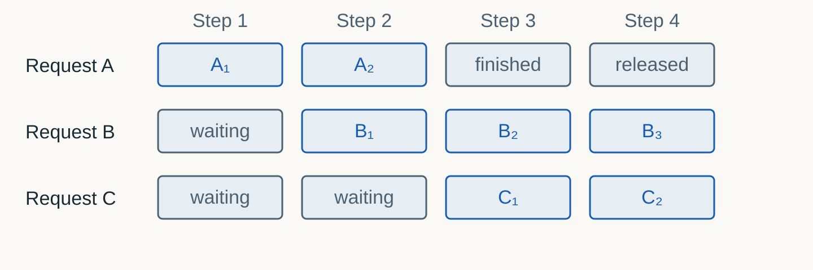
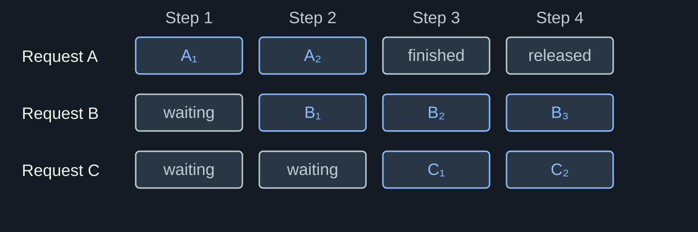
Illustrative schedule. A slot represents a scheduling step, not equal elapsed time. Prefill eligibility and real engine limits still apply. Source / method.
Shared model, separate request state
Logical state map
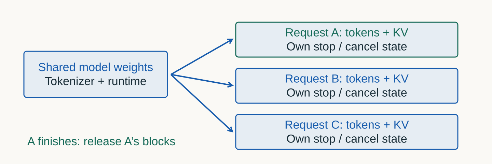
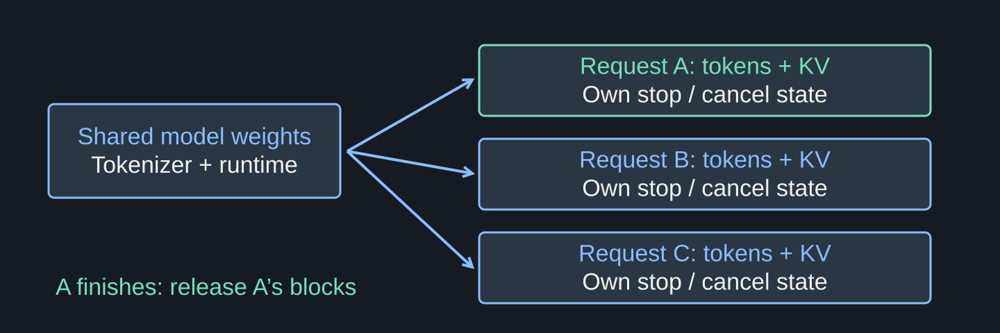
Logical state map. Request completion releases its live state. A closed socket alone does not prove the worker released that state. Source / method.
Separate the three planes
Reason about change
Plane
Carries
Failure example
Data
prompts, tokens, streams
backpressure lost
Control
routing, rollout, scale, config
traffic sent before ready
Observability
metrics, traces, logs, profiles
wrong denominator hides failure
Same model, different operating problem
Online vs offline
Online
arrivals are externally timed
per-request deadlines matter
streaming and cancellation matter
capacity headroom buys reliability
Offline batch
backlog is controlled
completion horizon dominates
reordering is often acceptable
high utilization can be rational
Common misconception
“We put FastAPI around it”
What people think
“The endpoint is concurrent, therefore the model service is concurrent.”
Async HTTP can accept many sockets while all requests wait behind one serialized model path. Concurrency at the gateway says nothing about scheduling inside the engine.
Generation and delivery clocks
Illustrative event order
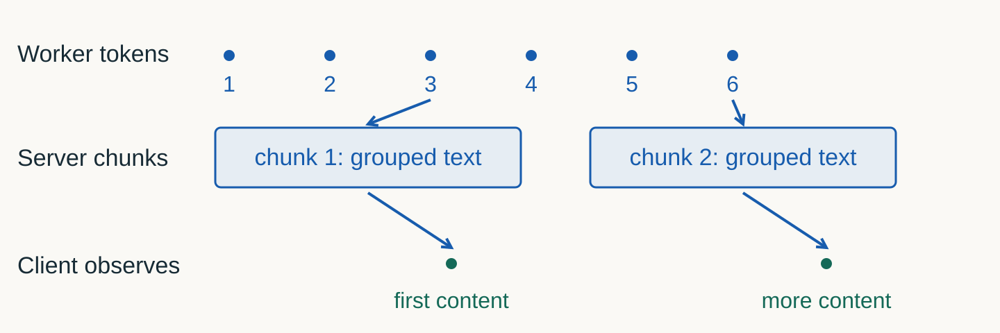
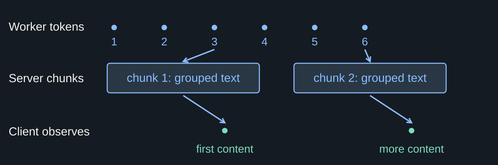
Illustrative event order. Record the first nonempty text chunk honestly when individual token events are unavailable.
Cancellation and release acknowledgement
Illustrative lifecycle
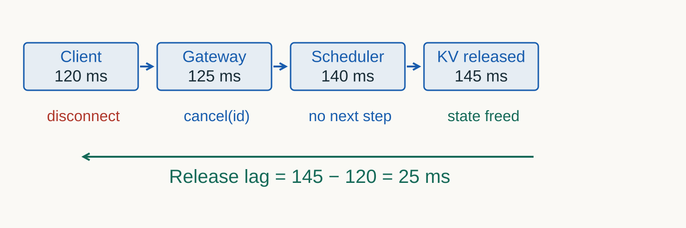
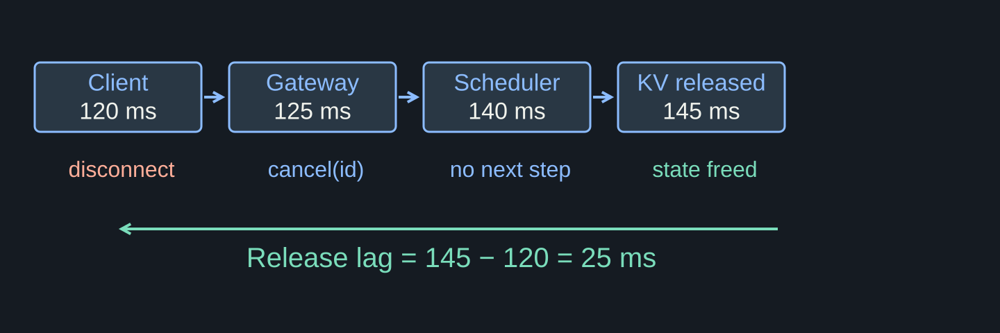
Illustrative lifecycle. Cancellation travels toward the worker; release acknowledgement can travel back. Already launched kernels need not stop instantly.
Every state needs an owner and a release event
Lifecycle table
State
Owner
Release event
socket / stream
gateway
final chunk or disconnect
queue entry
admission/scheduler
dispatch, expiry, cancellation
KV blocks
engine
finish, abort, eviction
trace
telemetry pipeline
export or sampled drop
Traffic begins after readiness
Illustrative deployment states
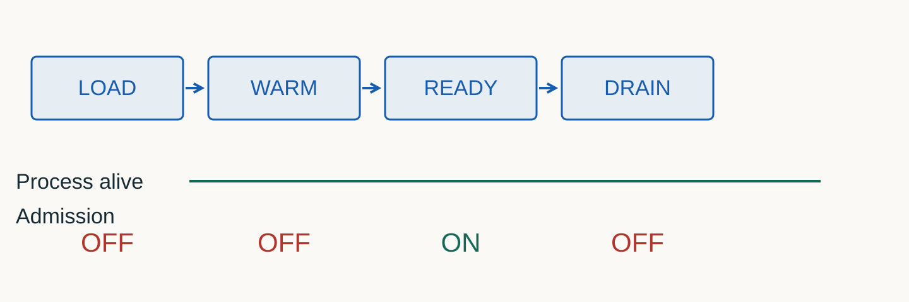
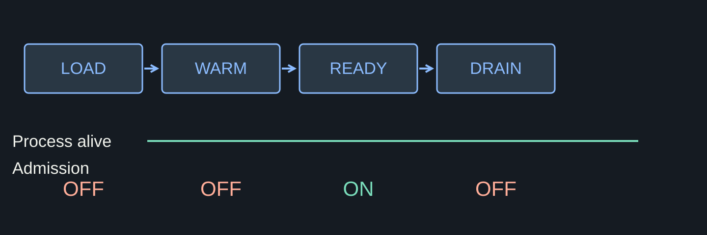
Illustrative deployment states. Readiness permits new traffic. Draining stops new admissions while accepted requests finish or cancel under a deadline. Source / method.
Boundary checklist: can you point to each one?
Stop and audit
Boundary
Required event
Required policy
edge → admission
request received
quota/deadline check
admission → scheduler
accepted/enqueued
bounded capacity
scheduler → worker
first scheduled step
fairness/preemption
worker → stream
first/final token
backpressure/cancel
02
Account for time
One latency number erases the mechanism.
Put timestamps on the request clock
Five observable events
t0
ARRIVE
gateway receives bytes
t1
QUEUE
admitted
t2
RUN
prefill begins
t3
TOKEN
first token emitted
t4
DONE
final byte sent
Where did the first 323 ms go?
Interactive sequence · budget 300 ms
Client
Gateway
Queue
Worker
request + auth+8 ms
wait admitted+220 ms
prefill+90 ms
first chunk+5 ms
visible tokenTTFT
TTFT budget
edge8 ms
queue220 ms
prefill90 ms
transfer5 ms
total0
TTFT: account for every wait before first content
Client clock · illustrative serial decomposition
$$T_{\mathrm{TTFT}}=T_e+T_q+T_p+T_f$$
Te + TfmsEdge/auth and first visible content transfer
TqmsAdmission-to-prefill queue residence
TpmsPrompt processing + first-token sampling
8 + 220 + 90 + 5 = 323 ms TTFT; the 300 ms target is missed before streaming begins.
Use non-overlapping trace intervals. Real stages can overlap; client TTFT alone cannot separate queue, compute and buffering.
Prefill consumes the known prompt
Illustrative token sequence
Illustrative token sequence. Positions can be processed in parallel subject to causal attention. Four boxes represent token IDs, not four words.
One output chain advances sequentially
Illustrative token sequence
Illustrative token sequence. For n output tokens there are n−1 gaps after the first output. The first output comes from prompt processing.
Count the gaps after the first token
Illustrative trace · final content, not terminal acknowledgement
Δt̄ms / gapMean inter-token interval for this request
323 ms + 127 × 22 ms = 3,117 ms = 3.117 s to the last token.
A final protocol acknowledgement can arrive later: \(\mathrm{E2E}=T_{\mathrm{last}}+T_{\mathrm{terminal}}\). The terminal delay follows the last content. Stream chunks need not be single tokens.
Name the metric and its interval
No overloaded “latency”
Metric
Clock interval
User question
TTFT
request → first visible token
When does it start?
ITL
token i → token i+1
Does it stutter?
TPOT
post-first-token duration / gaps
What is average cadence?
E2E
request → final byte
When is it complete?
Common metric trap
State the denominator
Ambiguous report
“TPOT = 22 ms.”
Say whether you divide decode duration by output tokens or by post-first-token gaps; say whether you average per request or pool tokens. Different tools use different conventions.
A percentile needs a population
p99 of what?
Valid statement
p99 TTFT among all admitted chat requests in region A during 10:00–10:15, with failures reported separately.
Invalid shortcut
“Latency p99 = 1.2 s” with no phase, route, tenant, window, sampling rule, or failure treatment.
Goodput counts answers that fulfil the promise
One observation window · illustrative counts
$$G=\frac{N_{\mathrm{useful}}}{\Delta t}$$
Guseful req/sRate of correct, successful, on-time answers
NusefulrequestsUnique originals that satisfy all declared SLOs
ΔtsWall-clock observation window, including waits
120 complete; 110 correct; 90 also on time in 60 s → G = 90 / 60 = 1.50 req/s.
Raw throughput is 120 / 60 = 2.00 req/s. Fix window-edge treatment and count retries separately; this is request-goodput, not token-goodput.
Useful answers in one minute
Illustrative nested populations
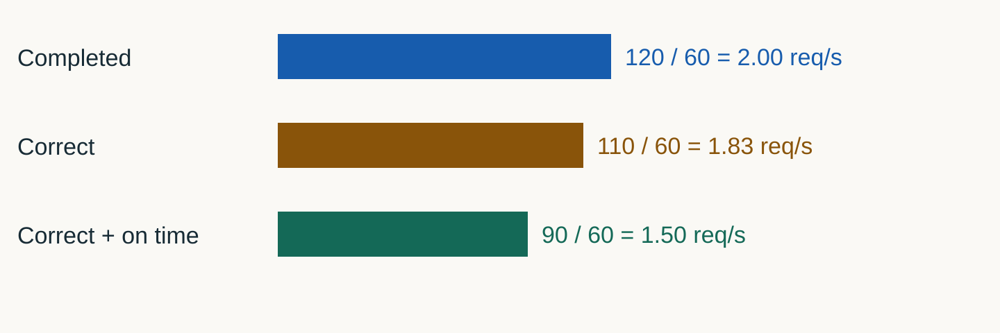
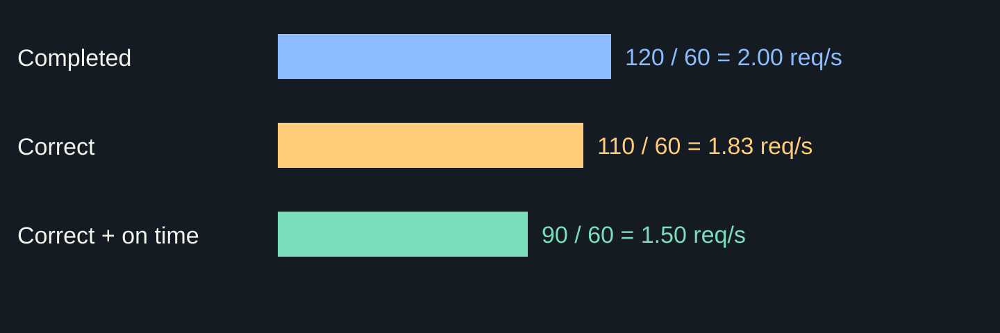
Illustrative nested populations. Use the same window and original-request population. Retries are attempts, not extra users.
Requests/s and tokens/s answer different questions
Keep both
Request throughput
Sensitive to output-length mix. Useful for product capacity when request classes are fixed.
Token throughput
Exposes generation work, but can rise while user-visible goodput falls.
One symptom, three possible causes
Constructed 2-second traces
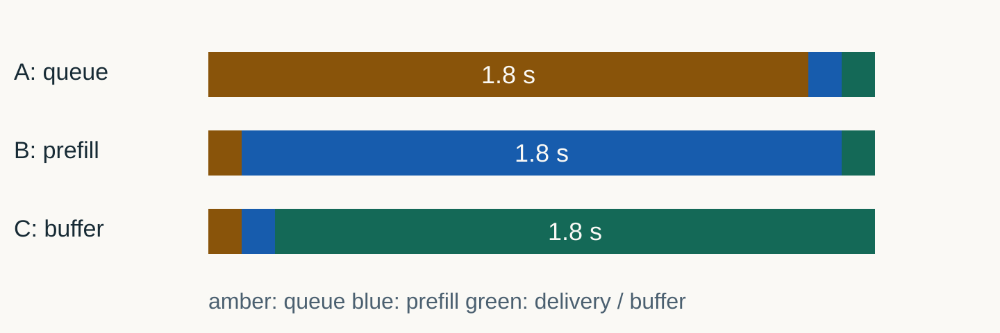
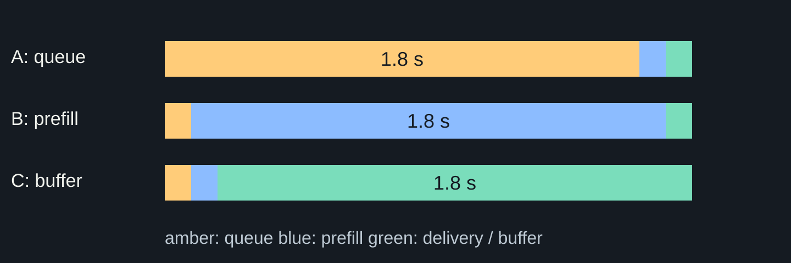
Constructed 2-second traces. The component durations are invented for diagnosis. Measure owner spans before choosing the intervention.
Trace durations; do not subtract unrelated clocks
Measurement hygiene
Safe
monotonic clock within one process
span duration recorded by owner
synchronized clocks with known error
Unsafe
client wall clock minus server wall clock
mix milliseconds and seconds
derive queue time from rounded logs
A real request has more than one clock
Topic 01 · RTX 5070 Ti instructor run
Observation
Measured value
Valid inference
Model load
4.51 s
exclude from warm request latency
43 input → 63 output tokens
1.395 s non-streaming
one local request, no server queue
First nonempty text chunk
0.036 s
not token-level TTFT
Complete streamed response
1.293 s
not comparable as a p95
Pinned Qwen2.5-0.5B FP16 · raw teaching evidence · one request, not a capacity test.
03
Specify the load
A benchmark without an arrival process is a demo.
Who controls the next arrival?
Illustrative traffic clocks
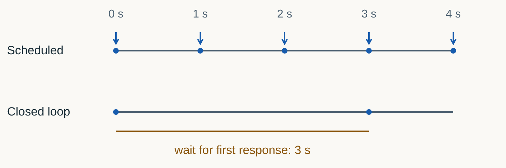
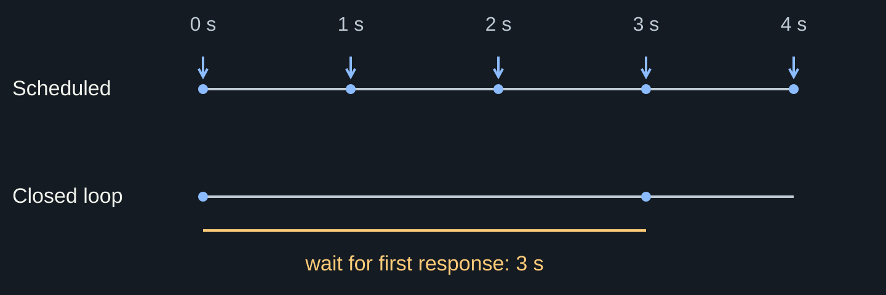
Illustrative traffic clocks. Closed loop is a valid user model. It cannot stand in for an independent arrival schedule when overload is the question.
A closed-loop client slows its own offered load
Fixed population · one outstanding request per user
$$X=\frac{N}{R+Z}$$
X · Nreq/s · usersCompletion rate; fixed client population
RsMean full response time, including waiting
ZsMean think time before the next request
N = 32, R = 0.5 s, Z = 0.5 s → 32 req/s. If R rises to 1.5 s, X falls to 16 req/s.
Steady cycle averages; one request per cycle, no parallel requests per user. A valid user model, but not an independent open-loop arrival schedule.
“Concurrency 32” is not a workload
Missing dimensions
The benchmark claim
“We tested at concurrency 32.”
Arrival model, prompt/output distributions, sampling parameters, streaming, deadline, cancellation, retry policy, warm/cold state, and duration all change the result.
λ · μrequests / sArrival rate; service capacity of one server
WsMean time in queue + service for one request
ρdimensionlessUtilization; λ must be smaller than μ
μ = 10 req/s: λ = 8 → W = 0.5 s; λ = 9.5 → W = 2 s. Service mean stays 0.1 s.
Poisson arrivals; independent exponential service; one server; infinite buffer; steady state. Batching, KV limits and GPU kernels are omitted.
Waiting near saturation
M/M/1 analytical model
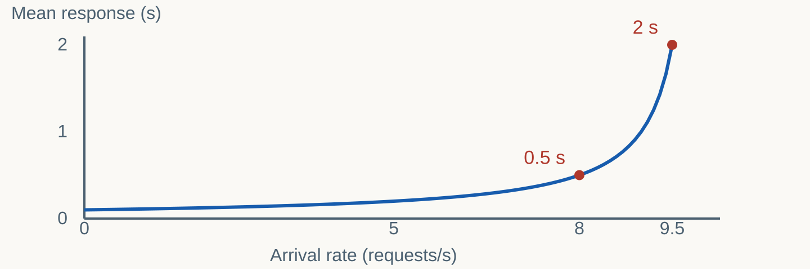
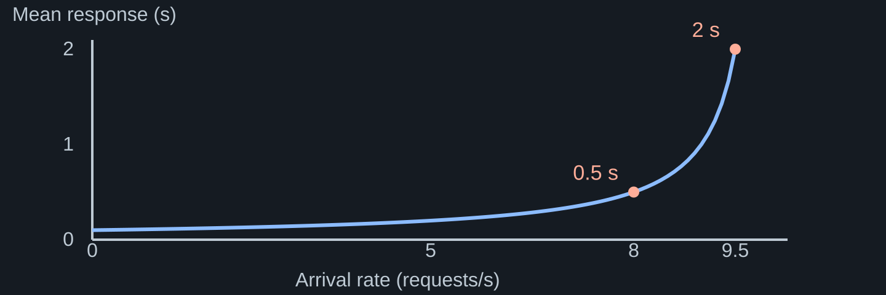
M/M/1 analytical model. Poisson arrivals, exponential service, one server, unlimited queue, stable rate below 10/s. This curve is not a GPU measurement.
The last acceptable load point
Illustrative capacity sweep
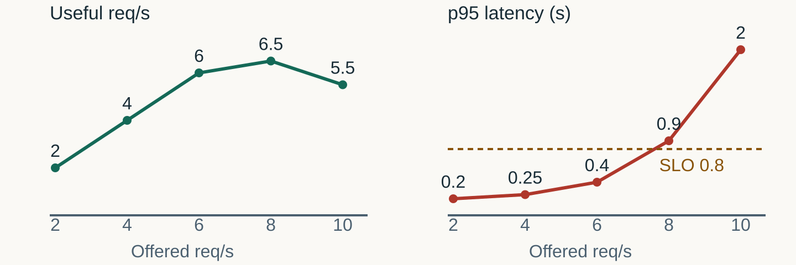
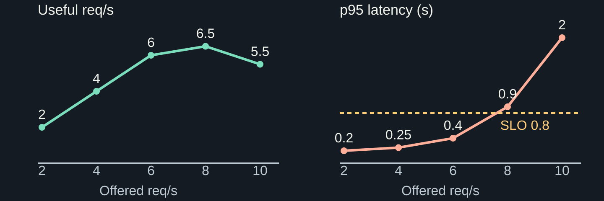
Illustrative capacity sweep. Constructed points, not the judge reference. A finer sweep is needed between the last passing and first failing points.
Service time and response time are different clocks
Queueing decomposition
Service time
Time the system actively needs to progress the request, under a precisely defined scheduling model.
Response time
Queue residence + service + transfers + buffering as observed at the chosen boundary.
High GPU utilization is not the objective
Resource metric ≠ product outcome
Dashboard comfort
“The GPU is at 99%, so the system is efficient.”
The GPU can be busy generating late, cancelled, retried, or low-priority tokens. Pair utilization with goodput, queue age, cancellation lag, and SLO attainment.
Scheduled requests disappear from a blocking test
Illustrative 4-second stall
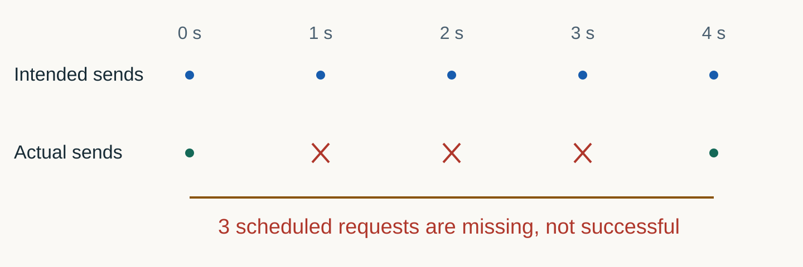
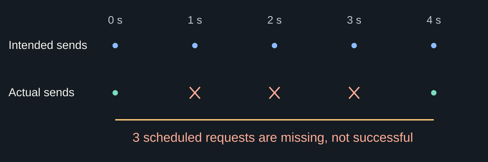
Illustrative 4-second stall. Retain scheduled-send, actual-send and completion times. A histogram correction cannot reconstruct real queueing, rejection or cancellation outcomes. Source / method.
Aggregate percentiles hide workload shifts
Stratify before comparing
Slice
Primary stress
Compare
short in / short out
fixed overhead + TTFT
admission and batching delay
long in / short out
prefill
input-token bins
short in / long out
decode residence
ITL and cancellation
long in / long out
state + fairness
reject/OOM rates
Count attempts, not just original user requests
Retry amplification · illustrative stable rates
$$\lambda_a=\lambda_o\,\mathbb{E}[A]$$
λₐ · λₒattempts/s · originals/sServer attempt rate; original user demand
Aattempts / originalInitial attempt plus retries and hedged copies
E[A]mean multiplierAverage over the same original population
100 originals/s; 20% get one retry → E[A] = 1.2 → 120 attempts/s.
One retry maximum in this example. Retries bunch in time and add token work; a mean multiplier does not predict burst shape or cancellation.
Load checklist: enough to reproduce the pressure
Before plotting results
Declare
Do not substitute
offered and admitted rate
concurrency alone
token-length distributions
one mean prompt
deadline/cancel/retry
client defaults
warm state + duration
“after warmup”
04
Control the failure loops
Overload is a feedback system, not a traffic spike.
The system attacks itself
A timeout is not removed work. If the original keeps running and the client retries, one unhappy user becomes multiple attempts.
Original demand and retry traffic
Illustrative one-retry budget
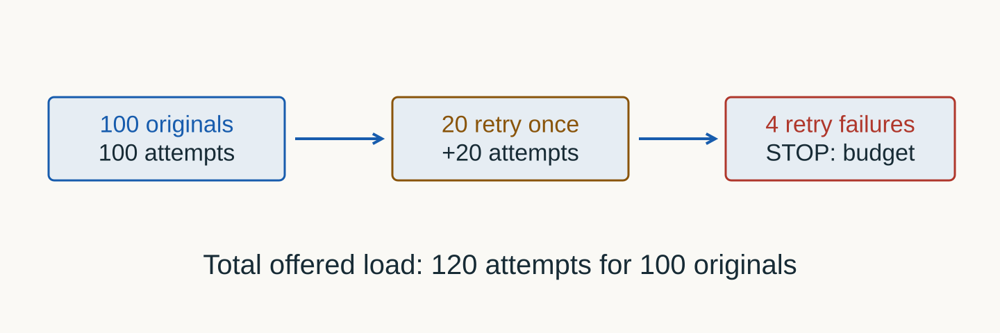
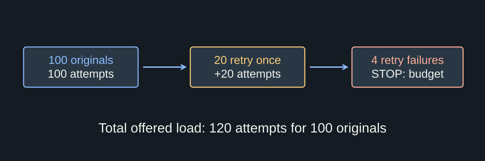
Illustrative one-retry budget. The first request may still be running. Cancellation and idempotency semantics decide whether attempts duplicate useful work.
A retry is a budgeted policy decision
Not an exception handler
Retry only when
the operation is safe/idempotent
the remaining deadline is useful
the failure is plausibly transient
a shared retry budget permits it
Shape the retry
bounded attempts
exponential backoff + jitter
server hints where available
deduplication or idempotency key
How many of 64 can meet the deadline?
Interactive fluid burst model · not GPU evidence
accept ≤ slots + queue; one equal job per slot per wave
Admitted
Rejected early
On time
Admitted but late
Last completion
Policy signal
Assumes equal service times and FIFO waves; omits prefill/decode, KV, retries and arrival jitter.
Admission protects a bounded worker
Illustrative slot accounting
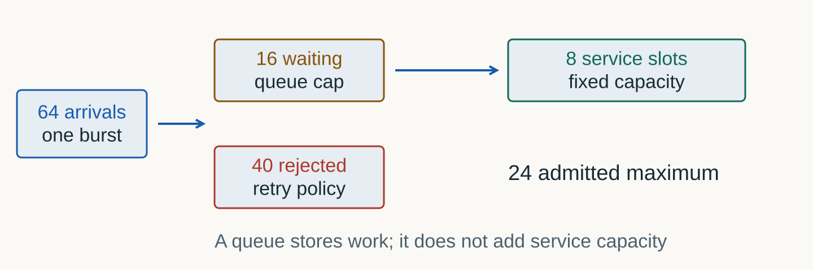
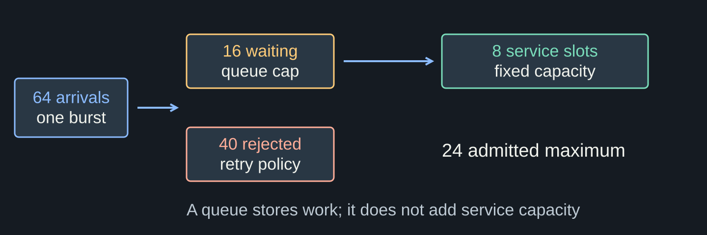
Illustrative slot accounting. Compare this fixed picture with the interactive burst model: increasing the queue can turn early rejects into late accepted failures.
A five-second deadline budget
Constructed admission decision
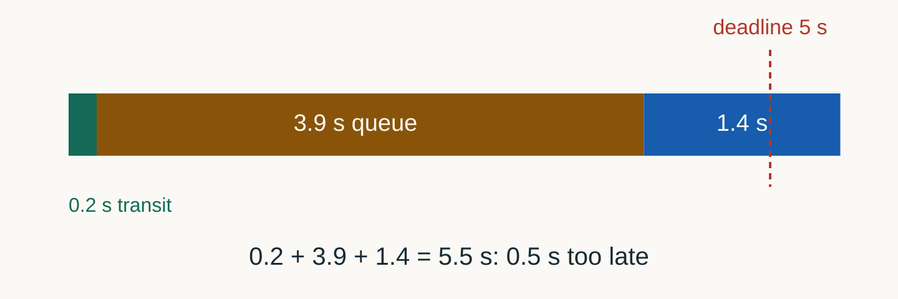
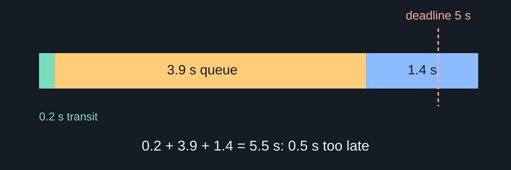
Constructed admission decision. Reject or defer under this estimate. Real policies need prediction error margins and fairness, not only the component sum.
Twenty fast branches can still make a slow answer
All branches required · independent identical success probabilities
$$P(\mathrm{all\ on\ time})=p^k$$
pprobability [0, 1]One branch meets the same deadline
kbranchesNumber of required parallel subrequests
pᵏprobability [0, 1]Every required branch meets its deadline
p = 0.99 and k = 20 → 0.99²⁰ = 0.818: about 18.2% of parent requests miss it.
Independence is essential, not a production default. Shared queues/failures correlate branches; quorum and partial-result policies change the event.
The slowest required branch gates completion
Illustrative parallel dependency
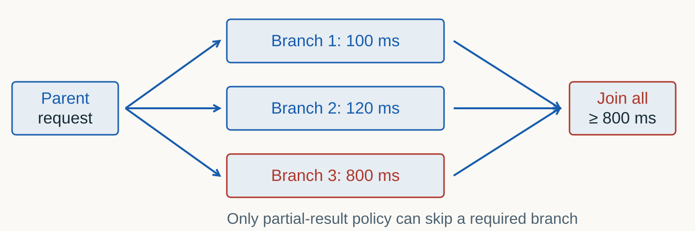
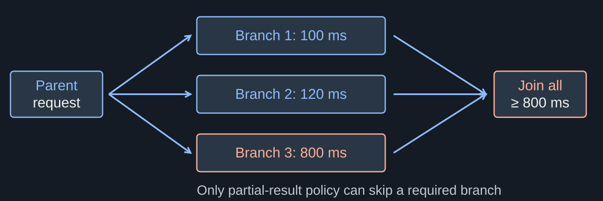
Illustrative parallel dependency. Parallel critical path uses a maximum. Sequential stages add. The p^k probability example additionally assumes independent branches. Source / method.
Cached artifacts still need loading and warmup
Illustrative scale-out critical path
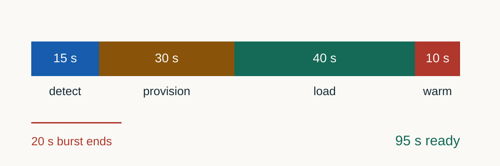
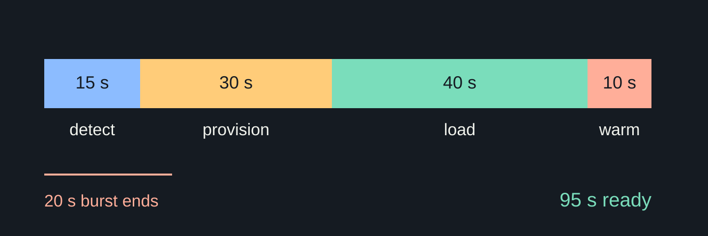
Illustrative scale-out critical path. A serial budget adds to 95 seconds. If stages overlap, measure the actual critical path instead.
A rollout is a state machine
No traffic before evidence
1
LOAD
revision + tokenizer
2
WARM
representative probe
3
READY
admit canary traffic
4
DRAIN
stop new work
5
STOP
release state
Shutdown order changes the failure wave
Illustrative release protocol
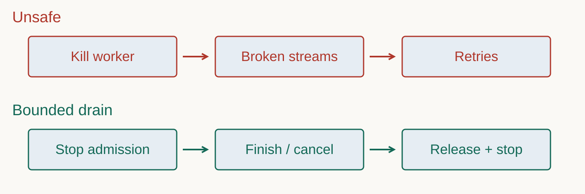
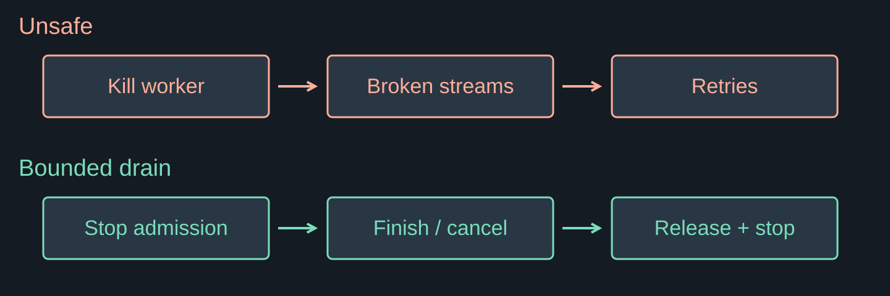
Illustrative release protocol. Drain is bounded; a permanently stuck request must not hold the deployment forever. Record finish versus partial response versus cancellation. Source / method.
Classify failure by the promise it breaks
Detection → action
Class
Signal
First action
overload
queue age + rejects
shed / reduce admission
resource exhaustion
allocation failures
protect state, narrow workload
dependency failure
downstream spans
budgeted fallback
bad revision
canary quality/SLO delta
stop rollout / rollback
“
Reject early enough that accepted work can still succeed.
Overload-control principle
05
Choose an architecture
The correct topology follows workload and failure semantics.
Three deployment shapes
Logical architecture comparison
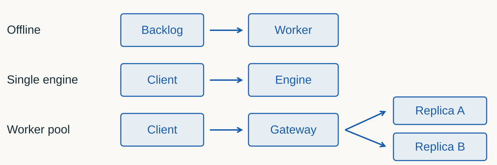
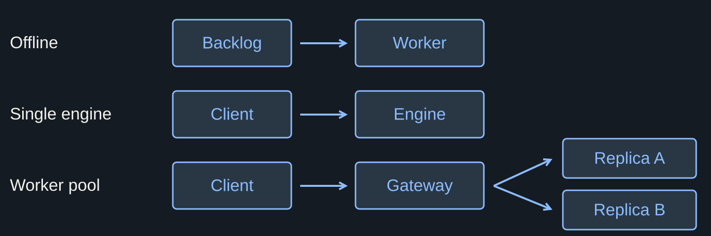
Logical architecture comparison. Boxes are logical responsibilities, not a requirement for separate processes. Add a boundary only when its isolation or scaling benefit is needed.
Start with one engine when one engine fits the promise
Complexity is a cost
Good fit
one model and policy
predictable load
failure domain acceptable
vertical capacity sufficient
Pressure to split
tenant/model routing
independent rollouts
horizontal capacity
different workload classes
Equal request counts can hide unequal work
Illustrative routing counterexample
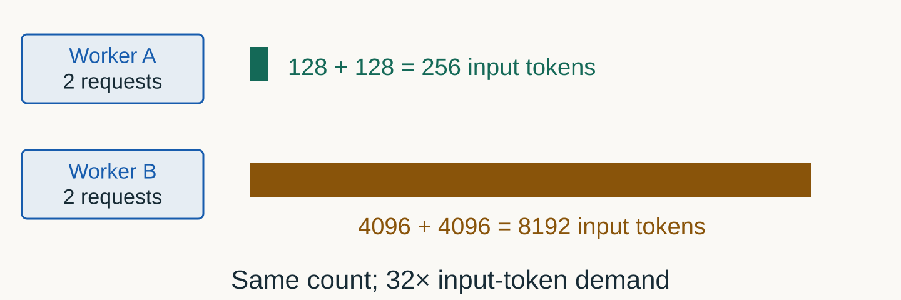
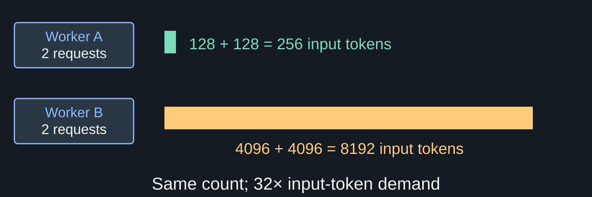
Illustrative routing counterexample. Token counts are a workload signal, not a linear execution-time predictor. Include outputs, queue age and cache state in the decision.
Cache savings can lose to queueing
Constructed routing decision
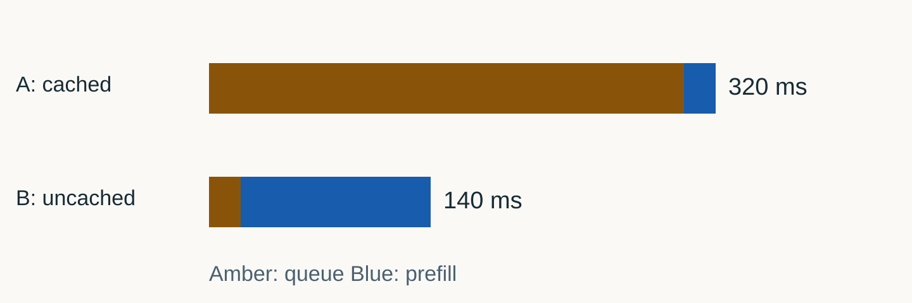
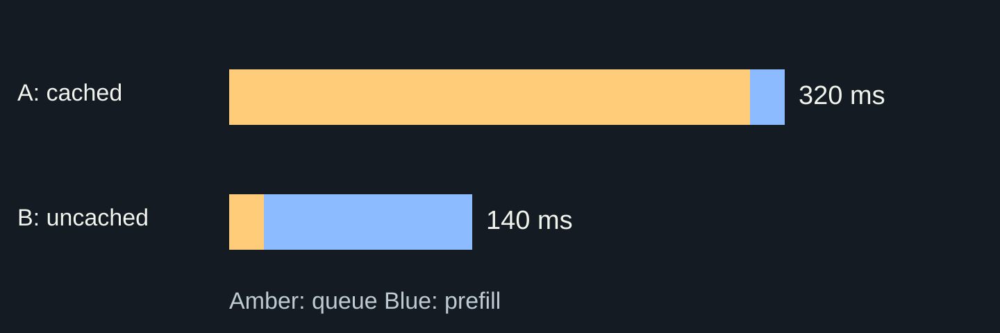
Constructed routing decision. Illustrative estimates for the same request. Compare end-to-end predicted cost and uncertainty, not cache hit rate alone.
Admission policy changes who waits
Illustrative tenant queue
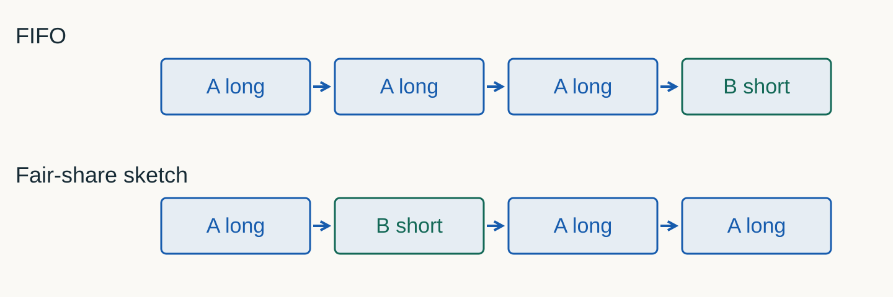
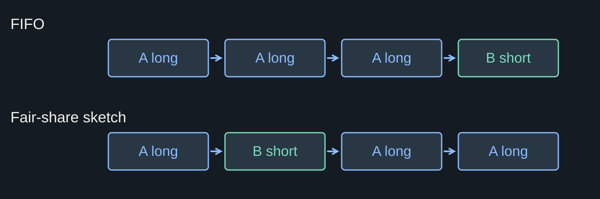
Illustrative tenant queue. The diagram shows order, not equal service time. Compare per-tenant deadline attainment before calling a policy fair.
Separating phases adds a state-transfer boundary
Conceptual architecture
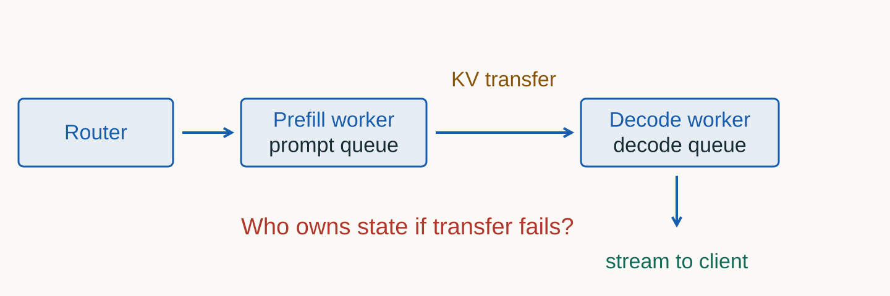
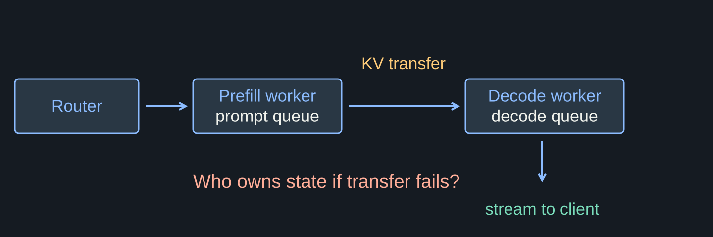
Conceptual architecture. No speedup is assumed. Specialization must outweigh state transfer, additional queueing and recovery costs. Source / method.
Scale on demand pressure, not only device activity
Signals have delay
Signal
Advantage
Trap
GPU utilization
available
late; includes waste
queue depth
direct pressure
ignores request size
queue age
deadline proximity
already reacting
predicted token work
closer to demand
prediction error
New capacity arrives after several separate delays
Illustrative serial scale-out critical path
$$T_{\mathrm{ready}}=T_d+T_v+T_l+T_w$$
Td · TvsDetect demand; provision and start the worker
Tl · TwsLoad cached weights; warm up kernels and probes
TreadysTime until additional capacity is usable
15 s detect + 30 s provision + 40 s load + 10 s warmup = 95 s; a 20 s burst ends first.
Sum only serial stages; overlapping work follows the critical path. Persistent caches avoid downloads, not weight loading. Protect the gap with admission/headroom.
Architecture starts from product behavior
Four live archetypes
Product
Dominant promise
Architecture pressure
chat assistant
TTFT + smooth stream
burst admission, cancel
batch summarizer
cost / completion horizon
backlog scheduling
coding copilot
very short deadline
aggressive stale-work cancel
fan-out agent
end-to-end success tail
deadline propagation
There is no context-free “best serving architecture”
Optimization needs a contract
Architecture cargo cult
“Production systems use microservices, disaggregation, and autoscaling.”
Each boundary adds independent scaling and failure isolation—and also serialization, networking, state transfer, tail amplification, and operational work.
Choose the smallest topology that satisfies the contract
Decision record
Record
Question
workload
which demand and length distributions?
objective
which SLO/cost/quality constraint dominates?
state
where does per-request/model state live?
failure
what degrades, retries, drains, or rolls back?
06
Measure before optimizing
If the experiment cannot be repeated, the number cannot be trusted.
Constructed single-request record. A worked example, not measured internal spans. The recorded terminal acknowledgement is later than the last content token.
A fast success percentile can hide failure
Constructed 100-attempt comparison
Constructed 100-attempt comparison. Report failure counts beside latency. Do not insert artificial completed 60-second responses for timeouts.
Six ways to produce a persuasive wrong answer
Audit before comparing
Trap
Bias
Repair
closed-loop only
hides overload
add scheduled open-loop sweep
drop failures
improves tails
report failure/reject rates
warm cache only
hides lifecycle cost
label warm and cold separately
different lengths
changes work
replay identical workload
client bottleneck
caps offered load
measure generator headroom
one short run
captures luck
repeat; retain raw events
A bounded experiment has a stopping rule
Illustrative measurement workflow
Illustrative measurement workflow. Stop on resource growth, errors or missed safety limits. A successful one-request lab does not authorize a broad unattended load sweep.
Deliverable: a pinned single-request baseline
Topic 01 · no capacity claim
Artifact
Acceptance
baseline JSON
model revision, runtime, GPU, token counts, warm and cold intervals
boundary trace
owners, observable timestamps and cancellation path
reflection
explain why chunks are not tokens and why one request proves no capacity envelope
submission repo
private copy of the public example, judge access confirmed, contract checks + GPU smoke, then round-01 tag
The payoff
Production readiness is not infinite capacity. It is a declared envelope, controlled admission, cancellable work, and evidence that accepted requests meet the promise.
Write one workload sentence, one SLO sentence, and the exact events needed to prove or disprove it. Next: why prefill and decode stress hardware differently.